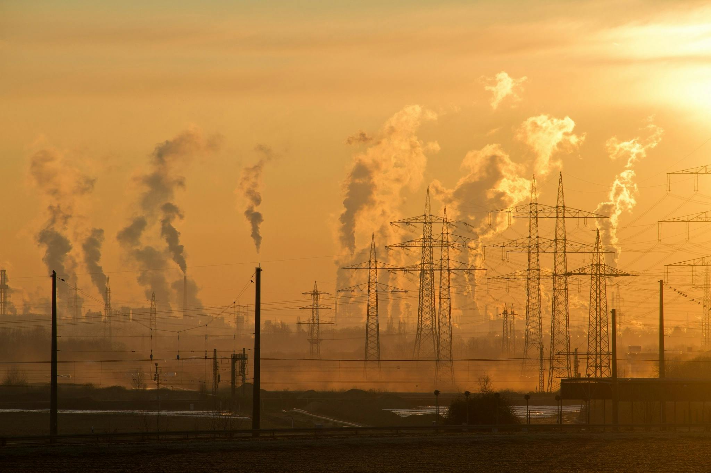

TEN
기후변화: 인간이 지구 온난화에 책임이 있다는 증거는?
제임스 존 스미스 ( 가상의 기자 )
2021년 10월 26일
지구는 산업 혁명의 초기부터 빠르게 온난화됐다.
지구 표면의 평균 온도는 1850년 이래 섭씨 약 1.1도 상승했다. 더욱이 지난 40년은 19세기 중반 이래 그 어느 때보다 따뜻했다.
이러한 결론은 세계 여러 지역에서 수집된 수백만 건의 측정 분석 결과다. 온도 판독값은 육지의 기상 관측소, 선박 및 위성에서 수집된다.
여러 독립적인 과학자 팀이 동일한 결과에 도달했다. 즉, 산업 시대의 시작과 동시에 온도가 급상승했다.
과학자들은 시간을 거슬러 올라가 온도 변화를 재구성할 수 있다.
나이테, 빙하코어(빙하 얼음을 조사하기 위해 빙하에 길게 구멍을 뚫어 캐낸 긴 원통 모양의 빙하 얼음), 호수 퇴적물, 산호는 모두 과거 기후의 특징을 기록한다.
이것은 현재의 온난화 단계 파악에 필요한 맥락을 제공한다. 실제로, 과학자들은 지구가 약 12만5000년 동안 이렇게 뜨겁지 않았다고 추정한다.

이러한 결론은 세계 여러 지역에서 수집된 수백만 건의 측정 분석 결과다. 온도 판독값은 육지의 기상 관측소, 선박 및 위성에서 수집된다.
여러 독립적인 과학자 팀이 동일한 결과에 도달했다. 즉, 산업 시대의 시작과 동시에 온도가 급상승했다.
과학자들은 시간을 거슬러 올라가 온도 변화를 재구성할 수 있다.
나이테, 빙하코어(빙하 얼음을 조사하기 위해 빙하에 길게 구멍을 뚫어 캐낸 긴 원통 모양의 빙하 얼음), 호수 퇴적물, 산호는 모두 과거 기후의 특징을 기록한다.
이것은 현재의 온난화 단계 파악에 필요한 맥락을 제공한다. 실제로, 과학자들은 지구가 약 12만5000년 동안 이렇게 뜨겁지 않았다고 추정한다.
태양열을 가두는 온실 가스는 온도 상승과 인간 활동 사이의 중요한 연결 고리다. 가장 중요한 것은 이산화탄소(CO2)인데, 그이유는 대기에 풍부하기 때문이다.
CO2는 태양 에너지를 가둔다. 인공위성은 CO2가 흡수하는 복사 에너지 파장만큼 지구에서 우주로 빠져나가는 열이 더 적게 방출됨을 보여준다.
화석 연료 연소와 산림 벌채는 온실 가스 방출로 이어진다. 두 가지 활동 모두 19세기 이후에 폭발적으로 증가했기 때문에 같은기간 동안 대기 중 CO2가 증가한 것은 놀라운 일이 아니다.
이 여분의 CO2가 어디에서 왔는지 명확하게 보여줄 방법이 있다. 화석 연료를 태울 때 생성되는 탄소에는 독특한 화학적 특성이 있다.
나이테와 극지방의 얼음은 모두 대기 화학의 변화를 기록한다. 조사 결과, 탄소, 특히 화석 공급원에서 나온 탄소가 1850년 이후 크게 증가한 것으로 나타났다.
분석에 따르면, 80만 년 동안 대기 중 이산화탄소의 농도는 300ppm 이상으로 상승하지 않았다. 그러나, 산업 혁명 이후 이는 거의 420ppm에 달하는 수준으로 치솟았다.
CO2는 태양 에너지를 가둔다. 인공위성은 CO2가 흡수하는 복사 에너지 파장만큼 지구에서 우주로 빠져나가는 열이 더 적게 방출됨을 보여준다.
화석 연료 연소와 산림 벌채는 온실 가스 방출로 이어진다. 두 가지 활동 모두 19세기 이후에 폭발적으로 증가했기 때문에 같은기간 동안 대기 중 CO2가 증가한 것은 놀라운 일이 아니다.
이 여분의 CO2가 어디에서 왔는지 명확하게 보여줄 방법이 있다. 화석 연료를 태울 때 생성되는 탄소에는 독특한 화학적 특성이 있다.
나이테와 극지방의 얼음은 모두 대기 화학의 변화를 기록한다. 조사 결과, 탄소, 특히 화석 공급원에서 나온 탄소가 1850년 이후 크게 증가한 것으로 나타났다.
분석에 따르면, 80만 년 동안 대기 중 이산화탄소의 농도는 300ppm 이상으로 상승하지 않았다. 그러나, 산업 혁명 이후 이는 거의 420ppm에 달하는 수준으로 치솟았다.